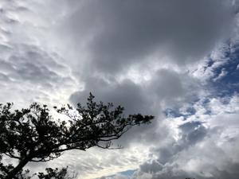
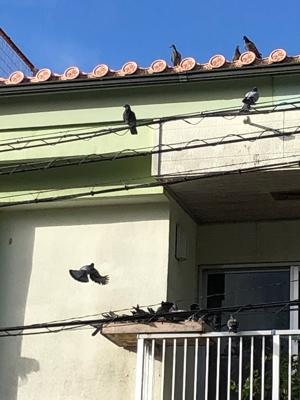
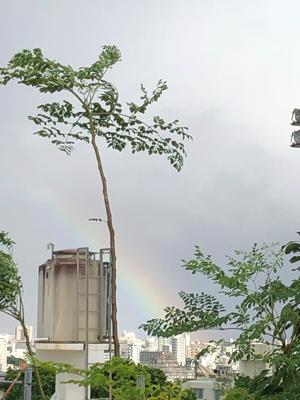

うるがいの話 ある日
最新: ランサムウエア【うるがいの話 ある日】とは 一日だけのプログです
『うるがいの話』の最新一日だけのプログで、通信料が少なく経済的だ。カニの画像をクリックすると全ての日付が載る『うるがいの話』サイトを表示します
|
|
【うるがいの話】 うるがい(ｳﾙｶﾞｲ urugai)とは、『もずくがに』の名前でとても大きくなります。 |
|---|---|
|
|
【カミマヤーの話】 猫のことを方言でマヤーといいます。カミマヤー（kamimayaa）とは、神の猫のことです。 |
|
【たながぁの音楽】 たながぁ（ﾀﾅｶﾞｰ tanagaa）とは手長えびのことで、何種類かあり大きいのは車 エビぐらいになります。 |

|
【ぶながぁの話】 ぶながぁ(ﾌﾞﾅｶﾞｰ bunagaa)とは、赤い髪の毛、赤い身体、そして身長は１ｍ２０ｃｍ ぐらい、川の蟹を食べているの目撃された。場所は沖縄県国頭郡大宜味村のと ある村僕の隣近所に住んでいる爺さんから、聞いた話です。 |
|
|
【ギーマの話】 ギーマ(giima)とは、山原の里山に咲くスズランに似た、 花を付けます。実は食べられます、 気が付くと口の周りが紫になっています。 |
2022年10月15日 (土）ランサムウエア
15:33
 
那覇市の図書館システムがコンピューターウイルス「ランサムウエア」の攻撃
を受け、全七つの市立図書館と一つの図書室で１３日から障害が発生し、本の
貸し出しや予約ができなくなっていることが分かった。復旧のめどはたってい
ない。
図書館が感染したウイルスには、メールアドレスと「７日以内にアクセスしな
ければファイルは戻らない」とのメッセージがあった。
なるほど、大事である。セキュリテイ対策は行っている筈だが、図書館利用者
は大迷惑だろう。私への迷惑ＳＭＳは諦めたのか、数日まえから来なくなって
いる、やれやれ。昼ごはんにケンタッキーを食べる、骨ごとバリバリ噛んでい
たら、前歯（上）が割れた！。蟹のバリバリ食べて、歯が割れた出来事に似て
いる。治療は、月曜日を予定、それまで歯の前上部をガードするマウスガード
を利用することにする。およよ

１５時２８分 ビットコインの総資産 ￥８、２５９↓